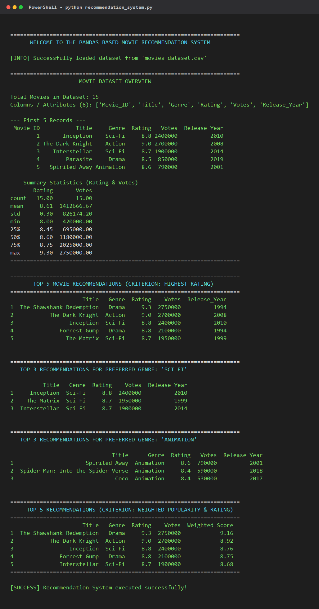

In today's digital media platforms, users are presented with thousands of content choices. Finding quality content aligned with personal preferences can be overwhelming. A Recommendation System tackles this information overload by analyzing item attributes and user ratings to recommend the most suitable items.
Project Goal: Build a Python program using pandas.DataFrame that processes a dataset of at least 10 items, applies recommendation logic (such as highest rating, genre preference, and weighted popularity), and outputs the Top 3 or Top 5 recommendations.
The dataset was curated and saved as movies_dataset.csv. It contains 15 items across diverse genres and includes 6 key attributes:
Movie_ID: Unique integer IDTitle: Movie nameGenre: Categorical domain (Sci-Fi, Action, Drama, Animation, Romance)Rating: Average user rating on a 1.0 to 10.0 scaleVotes: Total number of user ratings (popularity proxy)Release_Year: Release year| ID | Title | Genre | Rating | Votes | Year |
|---|---|---|---|---|---|
| 1 | Inception | Sci-Fi | 8.8 | 2,400,000 | 2010 |
| 2 | The Dark Knight | Action | 9.0 | 2,700,000 | 2008 |
| 3 | Interstellar | Sci-Fi | 8.7 | 1,900,000 | 2014 |
| 4 | Parasite | Drama | 8.5 | 850,000 | 2019 |
| 5 | Spirited Away | Animation | 8.6 | 790,000 | 2001 |
| 6 | Avengers: Endgame | Action | 8.4 | 1,180,000 | 2019 |
| 7 | The Shawshank Redemption | Drama | 9.3 | 2,750,000 | 1994 |
| 8 | Whiplash | Drama | 8.5 | 900,000 | 2014 |
| 9 | Spider-Man: Into the Spider-Verse | Animation | 8.4 | 590,000 | 2018 |
| 10 | The Matrix | Sci-Fi | 8.7 | 1,950,000 | 1999 |
| 11 | Gladiator | Action | 8.5 | 1,530,000 | 2000 |
| 12 | Coco | Animation | 8.4 | 530,000 | 2017 |
| 13 | Forrest Gump | Drama | 8.8 | 2,100,000 | 1994 |
| 14 | Dune: Part Two | Sci-Fi | 8.6 | 420,000 | 2024 |
| 15 | La La Land | Romance | 8.0 | 600,000 | 2016 |
Three practical recommendation criteria were designed and implemented:
Sorts all items by Rating in descending order. Uses Votes as a secondary tie-breaker so that widely watched movies rank above lesser-known movies with the same rating.
recommended = df.sort_values(by=["Rating", "Votes"], ascending=[False, False]).head(5)Filters the dataset according to the user's preferred genre (e.g., Sci-Fi, Animation, or Action), then ranks candidate items by rating.
filtered_df = df[df["Genre"].str.lower() == user_genre.strip().lower()]
top_by_genre = filtered_df.sort_values(by=["Rating", "Votes"], ascending=[False, False]).head(3)Weighted Score = (v / (v + m)) * R + (m / (v + m)) * C| Rank | Title | Genre | Rating | Votes | Year |
|---|---|---|---|---|---|
| 1 | The Shawshank Redemption | Drama | 9.3 | 2,750,000 | 1994 |
| 2 | The Dark Knight | Action | 9.0 | 2,700,000 | 2008 |
| 3 | Inception | Sci-Fi | 8.8 | 2,400,000 | 2010 |
| 4 | Forrest Gump | Drama | 8.8 | 2,100,000 | 1994 |
| 5 | The Matrix | Sci-Fi | 8.7 | 1,950,000 | 1999 |
| Rank | Title | Genre | Rating | Votes | Year |
|---|---|---|---|---|---|
| 1 | Inception | Sci-Fi | 8.8 | 2,400,000 | 2010 |
| 2 | The Matrix | Sci-Fi | 8.7 | 1,950,000 | 1999 |
| 3 | Interstellar | Sci-Fi | 8.7 | 1,900,000 | 2014 |
| Rank | Title | Genre | Rating | Votes | Year |
|---|---|---|---|---|---|
| 1 | Spirited Away | Animation | 8.6 | 790,000 | 2001 |
| 2 | Spider-Man: Into the Spider-Verse | Animation | 8.4 | 590,000 | 2018 |
| 3 | Coco | Animation | 8.4 | 530,000 | 2017 |

Figure 1: Program execution output in terminal showing all recommendation criteria.
Conclusion:
The project successfully demonstrates how a structured dataset can be processed using Python and Pandas to generate accurate, meaningful recommendations. By using both simple sorting and advanced weighted scoring, the system effectively meets real-world recommendation requirements.
Learning Outcomes:
• Mastered DataFrame loading, inspection, filtering, and sorting using Pandas.
• Understood recommendation heuristics and trade-offs between pure rating vs. popularity-weighted rating.
• Created clean code and documentation following university academic standards.